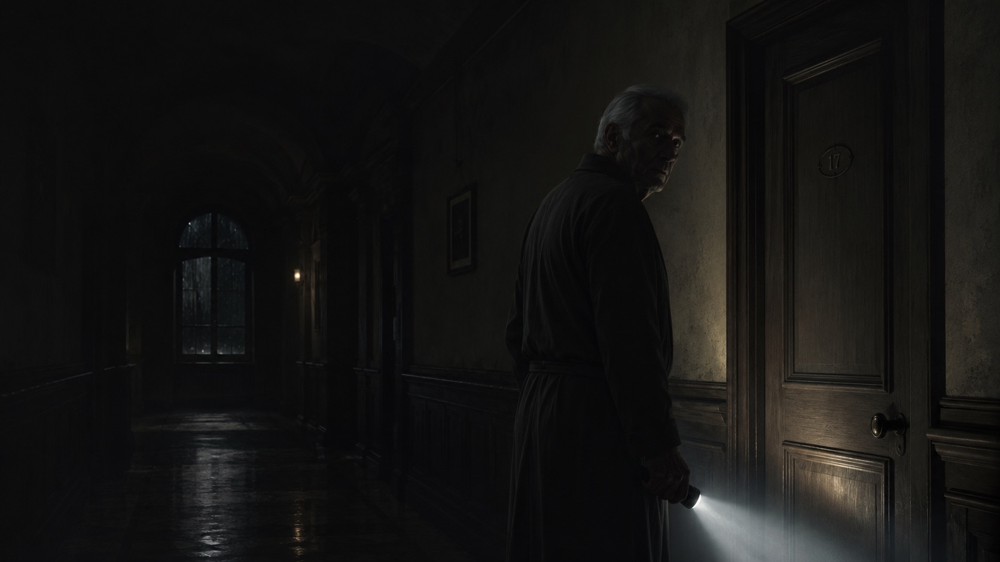

Lontano dai cipressi
Un bosco, una casa per anziani e una colpa che attraversa il tempo.
Esplora il libro
Ultima pubblicazione · Edikit 2026
Tra i boschi dell'Abruzzo dimenticati dalla guerra, il silenzio nasconde verità spietate.
Due linee narrative si rincorrono tra memoria, vecchiaia e colpa, fino a una fortezza isolata dove i lupi non sono le uniche bestie da temere.
«Un gotico appenninico con struttura da indagine e cuore da parabola nera.»Leggi la recensione
Bibliografia
Due storie diverse, unite da personaggi costretti a guardare ciò che avrebbero preferito lasciare nell'ombra.
Un bosco, una casa per anziani e una colpa che attraversa il tempo.
Esplora il libro
Un treno maledetto, un invito letale e quattro donne intrappolate in un gioco senza scampo.
Esplora il libroEsperienza narrativa
Entra nella Casa. Trova l'ultima porta.
Una breve esperienza interattiva ispirata all'universo di Lontano dai cipressi, tra stanze, rumori e presenze che forse sarebbe meglio non svegliare.
Entra nella Casa
L'autore
Nato nel 1980 a L'Aquila, vive a Roma dal 2014. Scrive narrativa fantastica, thriller e horror, esplorando le zone d'ombra del reale, i legami affettivi, la colpa e le scelte morali.
Ha pubblicato Cinque piccole affamate per Delos Digital nel 2025 e Lontano dai cipressi per Edikit nel 2026.
Leggi la biografiaRecensioni e segnalazioni
Una selezione di articoli e letture critiche dedicate ai romanzi.
Il quotidiano presenta il romanzo, le sue radici abruzzesi e il legame con l'esperienza narrativa La Casa al buio.
Un approfondimento sul legame tra il romanzo, il territorio abruzzese e l'esperienza narrativa La Casa al buio.
Contatti
Per comunicazioni professionali, recensioni, interviste o presentazioni, puoi scrivermi via e-mail o seguirmi su Instagram.